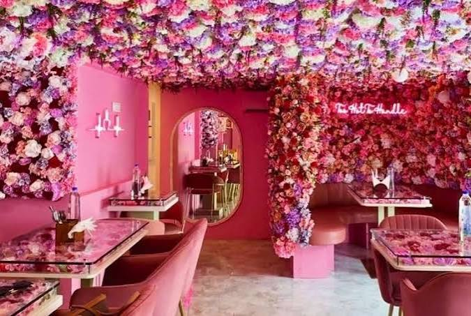
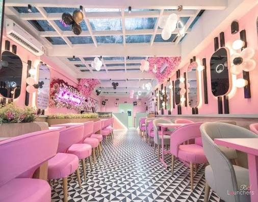
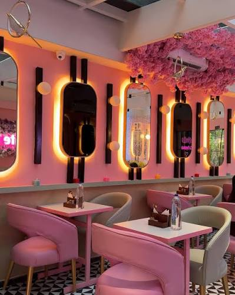
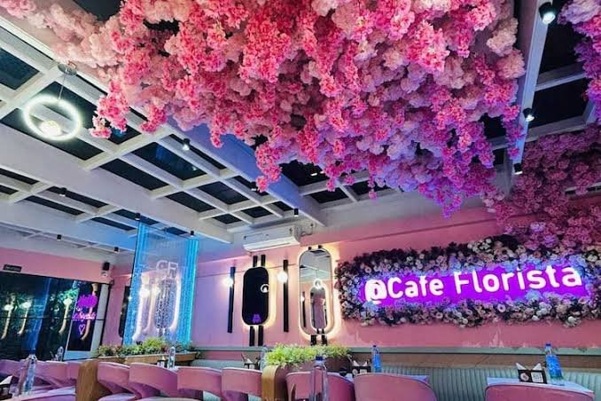
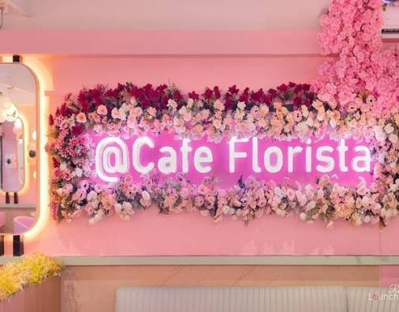

Walls of blooms
A flower-filled setting, made to brighten an ordinary day.
Flowers, flavour & a little pause
Step into a bright, flower-filled cafe in Kolkata’s Park Street area. Find a table, take in the blooms, and make a moment of it.
Our cafe
Pink walls, flower-covered ceilings, and cosy corners make Cafe Florista a place to slow down and stay awhile. Come by for a coffee, a meal, or a sweet treat.
A flower-filled setting, made to brighten an ordinary day.
Gather your favourite people and make a little time for yourself.
Gallery





Find us
4, Royd Street Area,
opposite Royd Nursing Home,
Park Street Area, Kolkata
Check today’s opening hours on Zomato.
Call Cafe Florista · +91 98311 95894